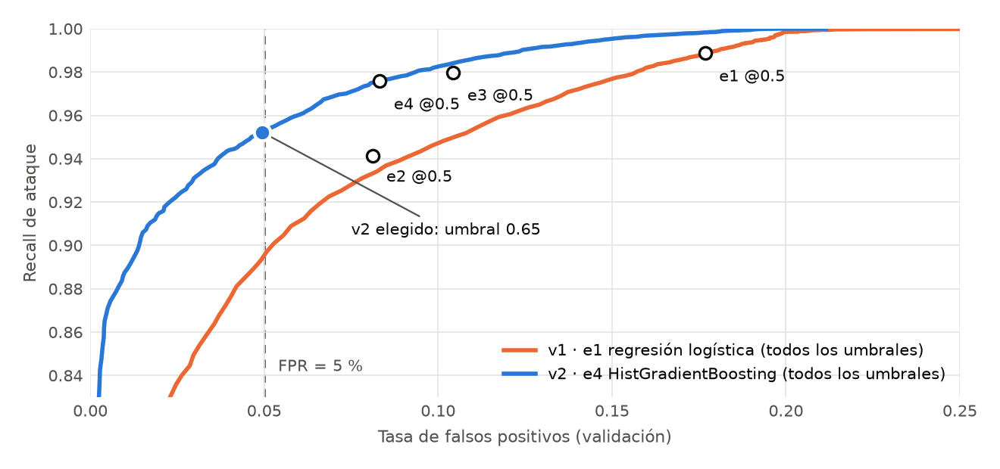

Se usaron las particiones publicadas por UNSW: UNSW_NB15_training-set.csv (175.341 filas) y UNSW_NB15_testing-set.csv (82.332 filas), 45 columnas, sin faltantes. Sus SHA-256 coinciden con las huellas del anexo del taller (bec7dd5ec88d…, 734fe6642edf…). Objetivo: label (1 = ataque, clase positiva). Se excluyen attack_cat (es la respuesta en otra granularidad), label e id. La auditoría mostró que id filtra la clase: el archivo de training está ordenado (id 1–56.000 son normales, el resto ataques), así que un modelo podría aprender el orden del archivo. Quedan 42 variables predictoras, 3 categóricas (proto, service, state).
| Auditoría (por variables predictoras) | Training | Test |
|---|---|---|
| Filas · normal / ataque | 175.341 · 56.000 / 119.341 | 82.332 · 37.000 / 45.332 |
| Grupos de entradas únicas | 101.040 | 53.946 |
| Filas duplicadas por entradas | 74.301 (42,4 %) | 28.386 (34,5 %) |
| Grupos con etiquetas contradictorias (filas) | 229 (940) | 6 (14) |
Política. Los duplicados se conservan porque reflejan la frecuencia real de conexiones, pero cada grupo de entradas idénticas queda completo en una sola partición. Los 229 grupos contradictorios (940 filas, 0,5 %) no se pueden aprender y se excluyen de train/val; quedan marcados en splits.csv. El test no se modifica.
Particiones. Train y validación salen solo del archivo de training con StratifiedGroupKFold (5 folds, semilla 42; el fold 0 es validación), agrupando por la huella de las variables predictoras: 139.520 filas de train y 34.881 de validación, con 0 grupos compartidos. La proporción de ataques es la misma en ambas (68,1 %). El split es determinista: dos ejecuciones produjeron archivos idénticos. Codificación, imputación y escalado se ajustan solo con train, dentro de un Pipeline que se guarda completo. Cruce con el test: 8.313 filas del test (10,1 %) tienen entradas idénticas a alguna de train/val.
Dos versiones de datos en DVC. data/raw.dvc (archivos recibidos, md5 02b04edb2e25a537a7aa1cbf75c15435.dir) y data/prepared.dvc (train/val/test preparados y asignación de filas, md5 3f6784bc3efe6154e32ef7baca8247a9.dir), con remoto en DagsHub.
Las cuatro configuraciones usan la misma partición, la misma semilla y el mismo preprocesamiento base (mediana + escalado en numéricas, one-hot con categoría “infrecuente” para valores raros o nuevos). Cada run registra en MLflow la hipótesis, los parámetros, la semilla, el commit Git (3fd054d), el md5 DVC, las métricas de validación, los scores por fila y el modelo completo. Métricas con ataque como positivo; si un denominador es cero la métrica vale 0 y se marca en zero_division (no ocurrió).
| ID | Familia | Cambio | Recall | Precision | FPR | Macro-F1 | FP / FN | Run |
|---|---|---|---|---|---|---|---|---|
| e1 | Reg. logística | Referencia | 0,989 | 0,923 | 0,177 | 0,923 | 1.966 / 268 | 9682854f |
| e2 | Reg. logística | log1p + class_weight balanced | 0,941 | 0,961 | 0,081 | 0,925 | 902 / 1.392 | c12da9a4 |
| e3 | Árboles (bagging) | Random forest, 200 árboles | 0,980 | 0,953 | 0,104 | 0,945 | 1.161 / 478 | 6fa73d71 |
| e4 | Árboles (boosting) | HistGradientBoosting, 300 iter. | 0,976 | 0,962 | 0,083 | 0,950 | 926 / 575 | 21674853 |
Validación, 34.881 filas, umbral 0,5. Tabla completa: evidencias/experimentos.csv.

Lectura de errores. Los modelos lineales cometen sobre todo falsos positivos (e1: 1.966 normales marcados como ataque). Ponderar clases (e2) los reduce a la mitad, pero convierte parte en falsos negativos. Los árboles mejoran ambos errores a la vez, lo que confirma que la separación depende de interacciones entre protocolo, estado, TTL y volumen. En toda la curva de la Figura 1, la de boosting queda por encima de la lineal.
| v1 | v2 | |
|---|---|---|
| Configuración | e1 · regresión logística | e4 · HistGradientBoosting |
| Umbral (regla: ataque si score ≥ umbral) | 0,50 | 0,65 |
| Recall / precision / FPR / macro-F1 (val) | 0,989 / 0,923 / 0,177 / 0,923 | 0,952 / 0,976 / 0,049 / 0,945 |
| TN / FP / FN / TP (val) | 9.155 / 1.966 / 268 / 23.492 | 10.571 / 550 / 1.136 / 22.624 |
| Run MLflow | 9682854f9eed4516b187ad6d713e9833 | 216748533c514fc5b4625ceed0aeee59 |
| Revisión Hugging Face | 98c0228f88069b0a48ff041388bd1a4eb76a309b | 9da5454fe51b13cbb471a6b266d25ad681861504 |
| SHA-256 model.joblib | 4a9e3d854a328082157a4f13… | 4e173642c483816c4f073fe6… |
Qué cambia y por qué. v1 es la primera solución funcional: preprocesamiento, modelo lineal y umbral por defecto. v2 cambia el modelo (boosting, mejor macro-F1 de los cuatro experimentos y solo 1,1 MB frente a 58 MB del bosque) y el umbral. Mejora: los falsos positivos bajan de 1.966 a 550 (FPR de 0,177 a 0,049), la precision sube a 0,976 y el macro-F1 a 0,945. Empeora: los ataques no detectados suben de 268 a 1.136 (recall 0,989 → 0,952). Error aceptado: en un centro de operaciones cada falso positivo es una alerta que alguien revisa. Con FPR de 0,177, casi una de cada cinco conexiones normales generaría alerta y el sistema dejaría de ser creíble. Se acepta perder unos 3,7 puntos de recall a cambio de reducir las falsas alarmas a menos de un tercio.
La política se fijó antes de mirar el test, en configs/selection.yaml: el mayor recall de ataque con FPR de validación ≤ 5,0 %, barriendo umbrales con paso 0,005 sobre los scores de validación guardados en el run (sin reentrenar). El resultado es 0,65 (FPR 0,049). El barrido completo está en evidencias/umbral_v2.csv. Para v1 se mantiene 0,5 porque representa la solución inicial sin ajuste. La selección quedó en evidencias/seleccion.json y se congeló en el commit 94131ed859c9125b88a993dc1f828c552e40ce5a (2026-10-27T14:29:03-05:00), antes de la evaluación. src/evaluate_test.py se niega a correr si esa selección no está commiteada o si el test ya se evaluó.
Se evaluó una vez la revisión congelada de v2, descargada de Hugging Face por SHA, sobre las 82.332 filas del test oficial, sin eliminar ninguna. Las predicciones por fila están en evidencias/predicciones-test.csv (row_id, y_true, score_attack, y_pred) y las métricas se pueden recalcular desde ese archivo; el recálculo coincide con metricas-test.json.
| v2 · umbral 0,65 | Filas | Recall | Precision | FPR | Macro-F1 | TN / FP / FN / TP |
|---|---|---|---|---|---|---|
| Validación | 34.881 | 0,952 | 0,976 | 0,049 | 0,945 | 10.571 / 550 / 1.136 / 22.624 |
| Test | 82.332 | 0,968 | 0,867 | 0,181 | 0,898 | 30.288 / 6.712 / 1.432 / 43.900 |
| Test · entradas vistas en train/val | 8.313 | 0,998 | 0,965 | 0,203 | 0,932 | 996 / 254 / 13 / 7.050 |
| Test · entradas nuevas | 74.019 | 0,963 | 0,851 | 0,181 | 0,892 | 29.292 / 6.458 / 1.419 / 36.850 |
Interpretación. El recall se mantiene (0,968), pero el FPR se multiplica por 3,7 y la precision cae a 0,867. La caída no viene del solapamiento: en las filas con entradas nunca vistas el FPR es prácticamente el mismo (0,181). La explicación más probable es un corrimiento de distribución entre las particiones oficiales: el test tiene 44,9 % de tráfico normal frente a 31,9 % en training, y la composición de su tráfico normal también puede diferir. No se exploró más a fondo para no convertir el test en datos de análisis. Un umbral calibrado para 5 % de FPR en una distribución no garantiza ese FPR en otra. El resultado se conserva sin reajustar, porque hacerlo convertiría el test en datos de selección. La model card de v2 se actualizó con estas cifras en una revisión nueva (cfd5b24f8496…) que solo cambia README.md; el hash LFS de model.joblib es idéntico al evaluado.
Cada versión se puede seguir por identificadores, no por nombres: commit Git → md5 DVC → run ID de MLflow → revisión de Hugging Face → SHA-256 del modelo (tabla de la sección 3 y entrega.md). src/predict.py verifica el SHA-256 de model.joblib contra config.json antes de cargarlo. La prueba de recuperación (scripts/recuperacion.sh) clonó el código en una carpeta nueva, creó un venv nuevo con las dependencias fijadas, ejecutó dvc pull con caché vacía desde DagsHub (los 6 SHA-256 de datos originales y preparados coincidieron), descargó v1 y v2 por SHA completo con una caché de Hugging Face nueva y predijo 25 filas fijas de validación (mitad normales, mitad ataques). Resultado: las etiquetas son iguales y la diferencia máxima de score es 0 (v1) y 0 (v2), con tolerancia declarada de 10−9. Los archivos de salida tienen el mismo SHA-256 que los de referencia. Log y comandos: evidencias/recuperacion/entorno-nuevo/.
Uso de IA. Este proyecto se desarrolló con apoyo de Claude Code (Anthropic). El detalle de qué se hizo con el asistente y qué se verificó está en entrega.md.